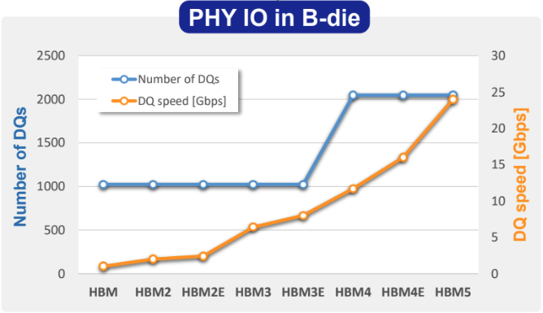
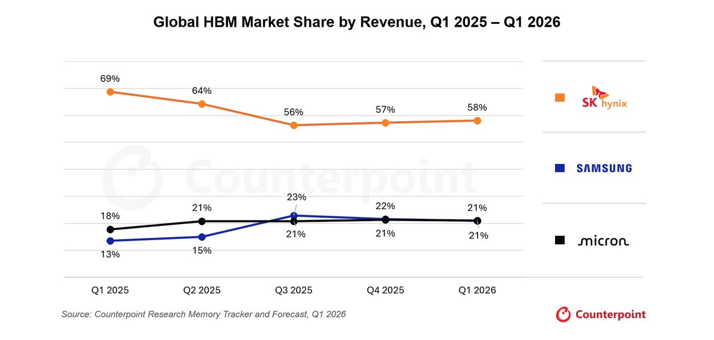
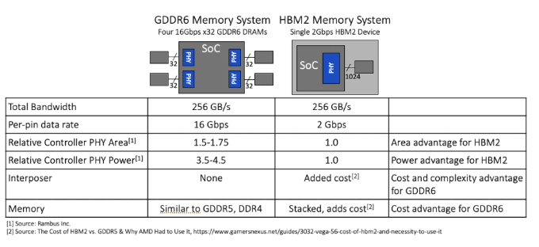
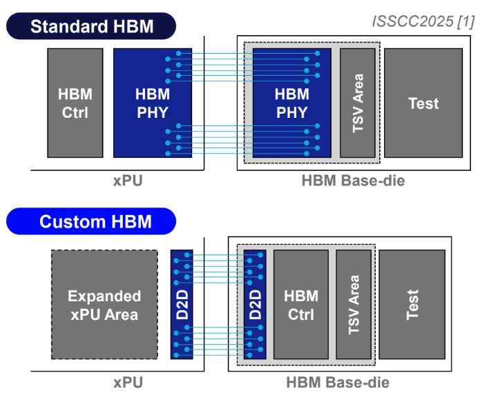
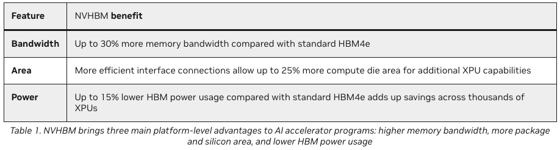
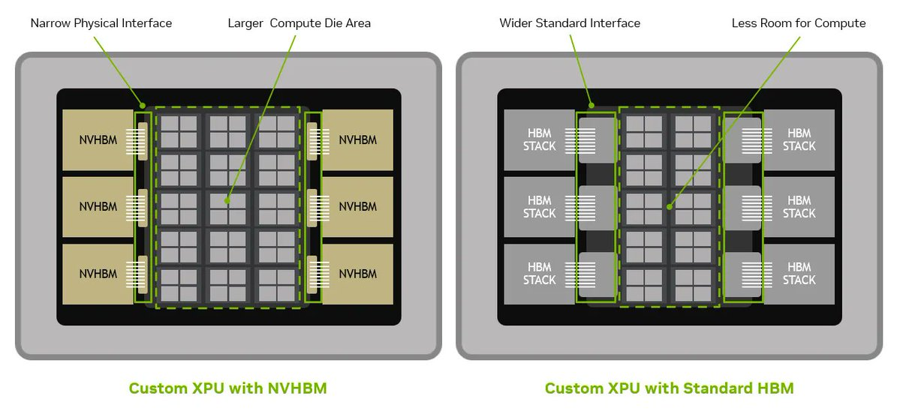
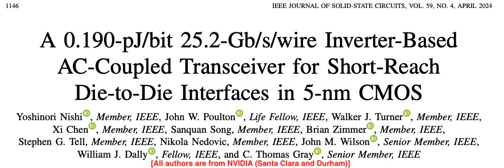

一个显著趋势是HBM性能与堆叠高度正在脱钩：过去一个月Rubin Ultra把HBM从12层降至8层的报道表明，业界已把容量当作「要绕开的问题」而不是要堆高的目标。真正的瓶颈在带宽，而答案藏在定制Base Die（基die/基础晶圆）。
本文为X博主Vikram Sekar的同题长文，7张原图全收录。
近期一个显著趋势是HBM性能与堆叠高度脱钩。过去一个月关于Rubin Ultra将HBM从12层降至8层的报道被解读为供应驱动的降级，这确实属实。但更大的转变在于，带宽而非容量正成为HBM的关键指标，而带宽的差异化优势正转向基底芯片。当基底芯片决定性能时，价值便归属于其设计者。对于NVHBM而言，这一设计者是NVIDIA，而非内存厂商。
业界已开始将容量视为需要绕开的问题，而非追求堆叠的目标。在Hot Chips大会上，与会者的普遍看法是，高堆叠HBM成本过高，且可能并无必要。堆叠更高层数曾是粗暴直接的方案，但随着内存成本上升，硬件制造商正从其他途径寻求性能提升。这给内存厂商留下了一个仅存的增长点：16/20层混合键合技术，这是他们独有的专长。而降规格趋势对此构成了直接威胁。
SemiAnalysis的Tanj Bennett在Hot Chips大会上提出的一个敏锐观察是，内存厂商并未专注于提升HBM的带宽，而是坚持堆叠DRAM芯片。HBM4已拥有2,048条并行数据通道，封装限制使得下一代产品难以将这一数字翻倍。更优的选择是提高每条通道的速度。我们看到HBM4的引脚速度已从JEDEC规范的8 Gbps提升至10 Gbps及以上。HBM4e更是将其推高至16 Gbps。

然而，要求内存公司提升通道速度，无异于要求企鹅飞翔。内存公司在HBM高速PHY设计上遭遇了重重困难。以下是简要历史回顾：
· 在HBM3e时代，三星因良率、电气和热问题的综合影响，难以通过NVIDIA的认证。进入HBM4后，三星的情况显著好转。其在4nm工艺节点上的内部逻辑专长，为制造高质量基底芯片提供了优势。他们声称，凭借这一选择，可将每引脚速度提升至13 Gbps。
· SK海力士在HBM4上遇到了重大问题，据称已导致Rubin出货延迟。他们在HBM4基底芯片设计中采用了台积电的12nm工艺节点，这一选择限制了其达到前沿通道速度的能力。不过，对于当前的HBM部署而言，其速度应已足够。据报道，SK海力士正与英特尔合作，作为下一代HBM基底芯片的双重供应商。我们猜测，他们初期将采用Intel 3-T（带TSV的Intel 3工艺）。
· 美光在HBM4上明显落后，原因在于他们为基底芯片选择了DRAM工艺节点而非逻辑节点。SemiAnalysis今年早些时候曾报道，美光在Rubin中的HBM份额在最初12个月内将为零。此后这一看法似乎有所改变，美光已与SK海力士和三星一同获得Rubin的认证资格。

根据Counterpoint Research的数据，当前全球HBM市场份额由SK海力士领跑，三星和美光并列其后。SK海力士一直是NVIDIA最大的供应商，而三星在Rubin的分配中份额正在增加。
HBM4市场达到的均衡是激烈竞争、延期和市场份额流失恐惧的结果，其中供需双方的关系已多次经受考验。获得更多HBM带宽意味着业余时代已经结束，价值将倾向于那些懂得如何在逻辑节点上设计高速PHY链路的人。
尽管内存公司在GDDR产品中已应对过高速接口速率，但HBM的难度更上一层楼。理解其中的物理原理至关重要。
· 总线宽度：GDDR7依赖32位宽总线，每引脚运行在48 Gbps，但与HBM相比更少的导线意味着串扰更小，热量更均匀地分布在主板上。HBM4运行2,048位宽总线，导线间串扰显著更高，散热也更具挑战性。
· PHY设计：驱动数据穿越总线的电路若需高速运行，体积会大幅增加，功耗也更高。在高速数据速率下恢复信号完整性需要多电平信令、决策反馈均衡（DFE）和连续时间线性均衡（CTLE）等电路技术，这些技术需要物理空间来实现（注：我们在Semi Doped播客关于Astera Labs重定时器的节目中用通俗语言解释了这些内容，感兴趣可收听）。大多数此类技术在HBM3e及以后随着供应商提升通道速率而变得重要，但与GDDR7相比仍大为简化。
下表来自Rambus，展示了GDDR6与HBM2设计的差异，作为示例。

HBM需在严苛的热环境中与XPU协同工作，同时满足NVIDIA等厂商设定的严格性能要求，这使得设计极具挑战。虽然GDDR内存已用于消费级显卡，但AI加速器的庞大规模使其成为不同的问题：内存公司并非解决此问题的最佳人选。在HBM中为AI加速器构建更快的PHY模块，可以说超出了许多内存公司的核心竞争力。然而，这正是行业所需：在基础裸片上优化电路设计以提升性能。
NVIDIA近期发布了NVHBM，其描述如下：
> 一种定制HBM基础裸片技术，与领先内存厂商共同设计和验证，可实现更高内存带宽、更优面积节省和更低功耗。
这一公告的意义远超行业评论的认知。正如X平台上一条评论所言，“基础晶圆是打入内存行业的特洛伊木马”。迄今为止，NVIDIA不得不接受内存公司做出的基础晶圆设计选择，其中一些选择如前所述颇具争议。NVHBM是NVIDIA将命运掌握在自己手中的方式。
NVHBM将内存控制器从XPU移至定制基础晶圆上，同时PHY接口在基础晶圆和XPU上的尺寸均有所减小。三星的这张图展示了良好的PHY设计如何在XPU和定制基础晶圆上节省空间。

NVIDIA声称NVHBM提供了更优的性能。以下是其技术博客中的表格。

内存带宽比HBM4e高出30%，每引脚速率将超过20 Gbps，同时功耗降低15%。更小的PHY设计为XPU晶圆中的更多计算核心腾出了额外空间。NVIDIA的博客展示了这在定制ASIC加速器中如何实现。
NVIDIA已在《固态电路杂志》上发表了关于高速die-to-die接口的研究，展示了在TSMC 5nm工艺上，1.2mm链路实现25.2 Gbps/链路、能效0.19 pJ/bit的成果。此处不深入技术细节，但基于其已发表的工作，NVHBM公告中的营销规格似乎可行。

由NVIDIA、Broadcom、AMD、Marvell等电路设计公司掌控的定制基础晶圆设计，将汇聚全球顶尖PHY设计师来解决HBM带宽提升的问题。定制基础晶圆与XPU的协同设计为性能进一步提升开辟了可能性：这一路径我们才刚刚起步。若想更深入了解定制基础晶圆的能力，请参阅下方我在Hot Chips内存教程中的免费文章。

参考：https://x.com/vikramskr/status/2094749612498440653